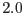
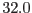

| Parameter | Mand | Type | Default | Constraints |
| imageset | yes | string | image.fits | |
Name of the input fits image.
|
| srclistset | no | string | ewavlist.fits | |
Output data set containing the wavelet source list.
|
| expmapset | no | string | expmap.fits | |
Name of the input fits image containing the exposure map.
|
| useexpmap | no | boolean | true | |
Use an external exposure map or not (in case no proper exposure map is available).
|
| minscale | no | real | 2.0 | - |
Minimum wavelet scale.
|
| maxscale | no | real | 8.0 | - |
Maximum wavelet scale.
|
| threshold | no | real | 5 | 3-7 |
Detection threshold in  , only sources with a significance larger than
this threshold will be stored.
The choice of the threshold will also influence the parameters of
sources above the threshold, since the background estimate depends
on the number of detected sources. , only sources with a significance larger than
this threshold will be stored.
The choice of the threshold will also influence the parameters of
sources above the threshold, since the background estimate depends
on the number of detected sources.
|
| edgethreshold | no | real | 4.0 | 0.0-10.0 |
Controls the suppression
of spurious detection near sharp edges in the exposure mask. The exposure mask
is convolved with the MH function and only regions, where the resulting image
value is less than edgethreshold, are used for detection.
Small values lead to better suppression of spurious sources, but also real sources
near edges might be missed. With edgethreshold=1.0, no sources will be rejected.
|
| niter | no | integer | 2 | 2-4 |
Number of iterations to be used.
|
| makerecon | no | boolean | false | |
Boolean controlling whether an image with detected sources represented
by Gaussians will be saved as a fits image.
|
| recimageset | no | string | reconstruction.fits | |
Name of output fits image containing the reconstructed input image.
See also parameter makerecon.
|
| savebkgrnd | no | boolean | false | |
Boolean controlling whether the final background image
will be saved as a fits image.
|
| bkgrndset | no | string | background.fits | |
Name of the fits output image containing the final background image.
|
| withinputlist | no | boolean | false | |
Boolean controlling whether reconstruction and/or background image will be
derived from an input source list (parameter inputlist) .
If set to ``true'', no source detection will be performed.
|
| inputlist | no | string | ewavlist.fits | |
If withinputlist=``true'', this file will be used as input source list.
|
| Parameter | Mand | Type | Default | Constraints |